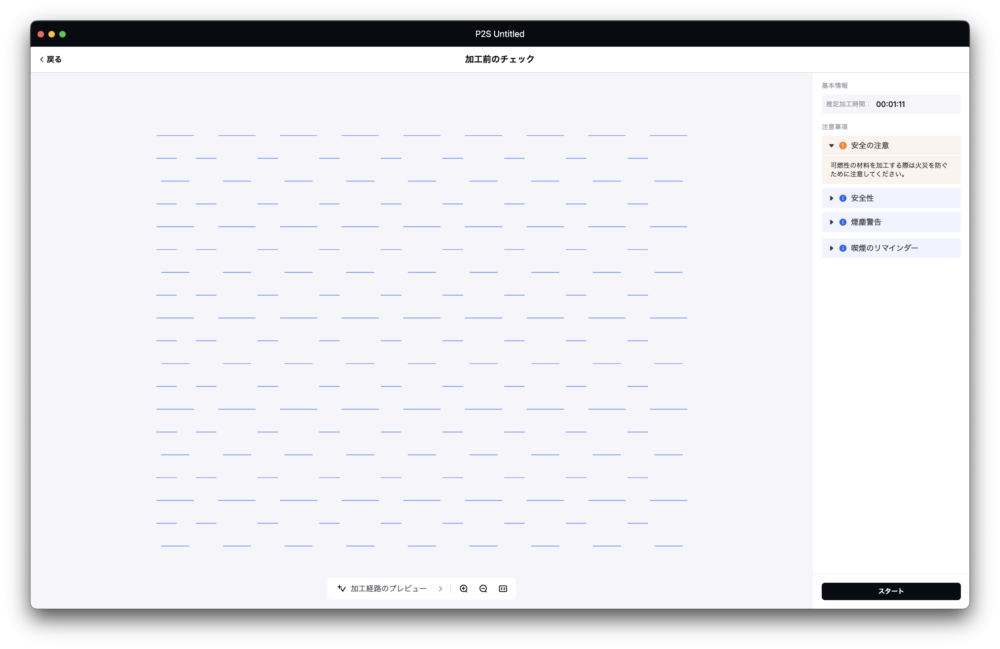
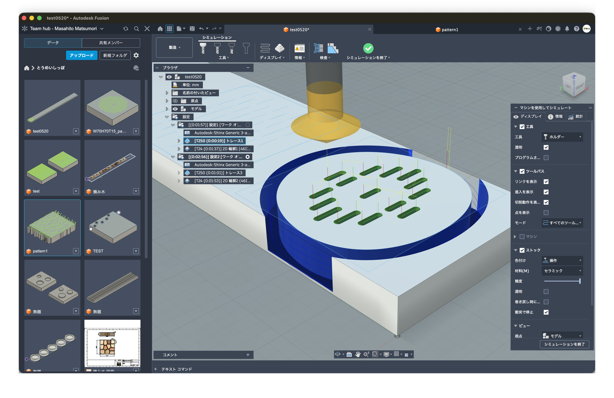
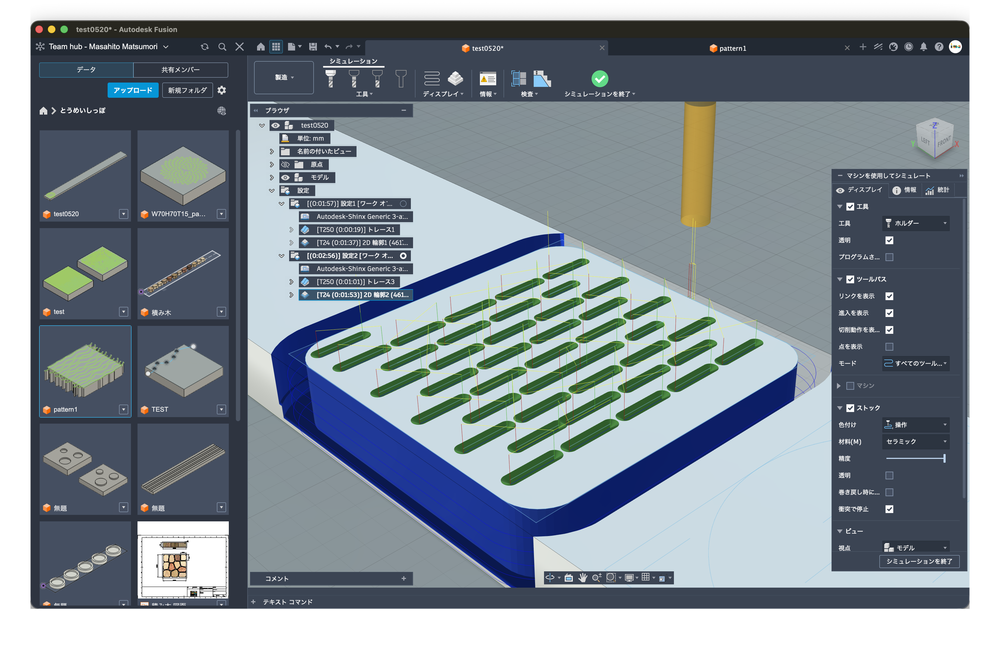

とうめいしっぽの生成模様プロトタイプを、チームで判断しやすいように図解した共有ページです。葉形の試作へ進む前に、外形だけでなく模様・加工方法・見積もり導線までを一度そろえて確認するための地図です。
新田さんからの葉形要望に対して、外形形状だけを先に切るのではなく、模様と加工を統合した方向性として確認する。
くどい説明ではなく、最初にこの3点だけ共有できれば議論の向きが揃う。
スクリーンショット時点の読取値です。正式見積ではなく、試作候補を選ぶための概算根拠として扱う。



| 候補 | 確認内容 | 読取時間 | 安全率1.25 | 機械費概算 | 単価根拠 |
|---|---|---|---|---|---|
| Square / Laser | レーザー細線スコア。外形カットや段取りは別。 | 1:11 | 約1.5分 | 約¥130-150 | xTool P2S ¥5,000-6,000/h |
| Leaf / NC V-bit | 葉形外形とNC V溝。葉形追加による価格影響の本命。 | 1:57 | 約2.5分 | 約¥210-330 | NC 3軸 ¥5,000-8,000/h |
| Square / Hybrid NC側 | 正方形総柄のNC骨格。Laser細部は別工程。 | 2:56 | 約4.0分 | 約¥330-530 | NC 3軸 ¥5,000-8,000/h |
| Hybrid 合算目安 | NC側にLaser細線を足した場合の機械費だけの目安。 | 2:56 + 1:11 | 約5.5分 | 約¥460-680 | NC 3軸 + xTool P2S |
単価根拠: Notion「松森木工所 加工費単価の正式共有」。ここでは加工機の稼働時間だけを概算し、材料、研磨、仕上げ、治具、タブ、刃物交換、検品、梱包、設計工数、段取り按分は含めない。Shinx 4-5軸単価で見る場合はNC部分が上振れする。
顧客向けと管理者向けを分ける。顧客には入力体験と意匠確認を見せ、製造データや板取りは管理者側に閉じる。
名前、誕生日、出生時刻、出生地、天気、身長、体重、家族の言葉を入力する。
利用目的、保存先、閲覧権限、保存期間、削除相談先を明示する。
顧客側では単体の意匠と入力体験だけを確認する。
入力値は単なる装飾ではなく、家族の選択として木に宿る。
最初は低コストにフォームで受付。現在のHTMLとは未接続。
回答を行として蓄積し、生成ID、同意状態、製造状態を管理する。
判断、タスク、通信ログ、関連資料のハブ。外部共有情報と内部情報を分ける。
顧客入力と製造データを接続するキー。個人情報そのものをファイル名にしない。
葉形、正方形、樹種、加工方言、密度、余白を確認する。
Laser、NC、Hybridで同じ線を使い回さず、加工ごとのデータへ分ける。
初回シミュレーション時間から、機械費だけの概算を算出する。
線幅、溝深さ、研磨後の残り、手触り、安全Rを現物で見る。
新田さん、阿部さん、内藤さんへ、方向性確認用として共有する。
葉形の形状確認と価格感も含め、目的別に2〜3案へ絞る。
クラウドファンディングに必要な実物写真と説明素材を集める。
公開可能な思想と、隠すべき製造ノウハウを分けて情報整理する。
「こぎん刺しの丸写し」ではなく、構造を学んだうえで木製玩具の条件へ翻訳していることを明確にする。
葉形は余白と手触りを活かし、中心に一つの紋として成立させる。正方形は上下左右の偏りを抑え、端で切れても続きが読める総柄として扱う。
Laserは細密な焼き色、NCは60度Vビットで読める太さと間隔、HybridはNCの触感骨格とLaserの細部を分離する。
次はこの中から試作用データを出し、加工時間と見た目の両方で判断する。
完成品として誤解されないように、進捗と未実装を明確に分ける。
アプリ生成だけで終わらせず、木工・デザインの実務ツールへ接続できる流れを目指す。
プロジェクトの判断、タスク、通信ログ、関連資料のハブ。
最優先顧客入力と管理表の低コストな最初の実装候補。
実務価値大非エンジニア向けに、URLだけで共有できる説明資料。
共有用SVG/DXFからツールパス、加工時間、概算見積もりへつなぐ。
次段階生成ルールと形状制約を本格的なパラメトリック設計へ拡張する。
構想ワークショップや付箋議論には向く。初期共有はHTMLで十分。
後続候補UIを本格設計する段階で有効。今は情報設計を優先。
後続候補今日の共有から、試作加工、撮影、クラウドファンディングへつなぐ。
注意: この図解は方向性共有用です。最終仕様、加工条件、安全基準、価格、個人情報運用を確定するものではありません。加工時間と概算単価は、スクリーンショット時点の初回シミュレーション値であり、実加工、段取り、研磨、仕上げ、検品後に更新します。